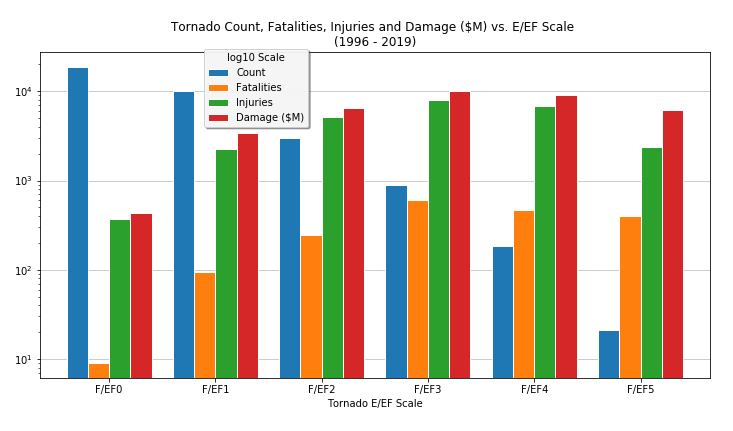

Tornado Impact Data: Visualizations by Andrea S. Johnson
Measurements of Impact
Two Decades of damage statistics, 1996-2019
Tornado Impacts
The National Weather Service classifies the measurements of impact for a tornado event as three distinct results.
 Data Visualization #1
Data Visualization #1
Tornado Frequency
The National Weather Service aggregates measurements for each individual tornado event. A tornado event is defined by a touchdown and a path.
 Data Visualization #2
Data Visualization #2
Tornado Severity
The National Weather Service classifies the severity of a tornado using the Fujita Scale.
 Data Visualization #3Tornado Geography
The National Weather Service also classifies tornado events to include location data.

 Data Visualization #4
Data Visualization #4
Questions to Answer:
- How do the "Measurements of impact" look year over year?
- Are the measurements of impact correlated with each other?
- Does frequency of tornado events have a direct relationship with the measurements of impact?
- Does an F5 event do more damage than a large number of F1 events?
- Where do most experience frequency and severity of tornadoes?
- Where does Indiana rank for tornado events among the 50 states?